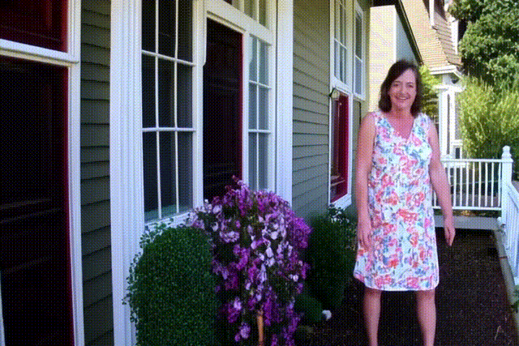

1. Comparison with Vanilla Model
Comparison between videos generated by the baseline
CogVideoX-5B model and our approach.
Vanilla

Ours

A cheerful middle-aged woman in a floral dress waves from her porch before bending down to pick up a garden trowel among the flowers.
Vanilla
Ours

A young woman dressed in a light blue t-shirt in a city park bends down to pick up a dropped sandwich and takes a bite.